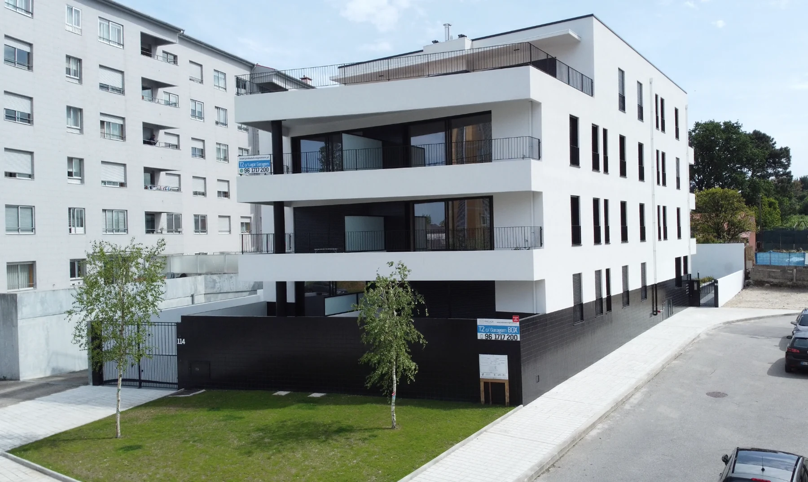

Um projeto em foco.
A seleção mantém o nome, a imagem e o ano publicados juntos. Assim, o visitante sabe a que empreendimento se refere quando pede informação.
Construção · Recuperação · Reabilitação
Uma seleção do portefólio Palhares. Explore cada edifício e organize o que gostaria de saber antes da primeira conversa.
Explorar a demonstração
Seleção do portefólio
Escolha um empreendimento para ver a imagem e os dados publicados. A informação comercial atual é confirmada pela Palhares.
Um dos empreendimentos apresentados no portefólio Palhares. Explore a imagem e identifique a informação que gostaria de aprofundar.
Esta seleção apresenta projetos. Não indica imóveis ou frações disponíveis para venda.
Consultar o portefólio oficialO seu ponto de partida
Seleção temporária nesta página. Não foi enviado um pedido.
Uma proposta de Ricardo Almeida
O vosso site já apresenta empreendimentos identificados, com imagens e contactos. Parti desse material para dar a cada projeto um espaço de consulta e ajudar o visitante a formular uma dúvida concreta.
Esta é uma demonstração independente, preparada para mostrar uma possibilidade de apresentação. O website oficial permanece a referência da empresa.
A seleção mantém o nome, a imagem e o ano publicados juntos. Assim, o visitante sabe a que empreendimento se refere quando pede informação.
Os temas de interesse ficam associados ao projeto selecionado. Uma futura conversa pode começar pelo contexto que a pessoa já explorou.
Separei a apresentação de projetos da informação comercial atual. A demonstração não presume frações, preços ou disponibilidade para venda.
Uma filmagem a preparar convosco
Proponho filmar uma etapa de obra que possam divulgar: a equipa a preparar, executar e verificar um acabamento, com uma explicação curta de quem acompanha o trabalho. Junto do empreendimento, esse registo pode ligar o edifício que se vê à atenção colocada na execução. A obra, a etapa e as autorizações seriam escolhidas convosco; as imagens desta demonstração são as do vosso portefólio.
Na Canvas Custom Furniture, fiz a filmagem, a edição e a integração do filme no website. Incluí esse projeto como exemplo concreto da ligação entre conteúdo e página.
Ver o projeto Canvas